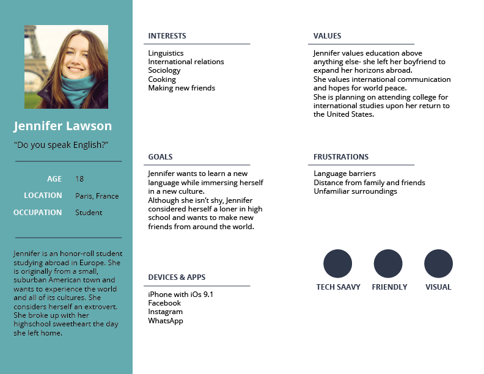
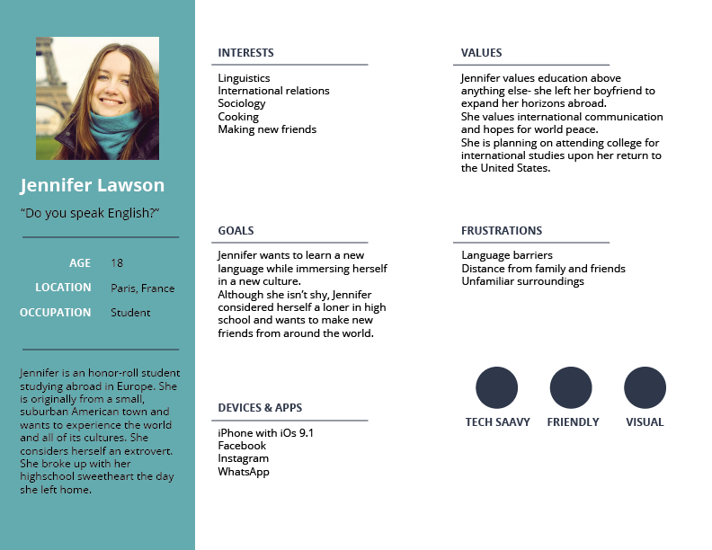

The Brief
We were tasked with creating an image-sharing app, similar to instagram, for a niche audience. We were tasked with creating an image-sharing app, similar to instagram, for a niche audience. We were tasked with creating an image-sharing app, similar to instagram, for a niche audience.
Summary
PINS creates a sense of community between individuals who would otherwise be strangers. They share a common experience and, while an amazing opportunity, it can be daunting. PINS allows exchange students to share their experiences with one another.
 
